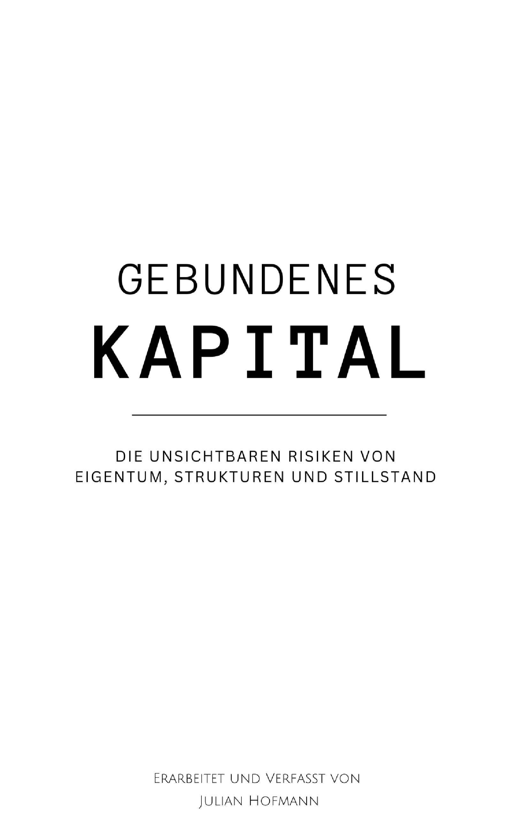

Ich übernehme die Weitergabe an kaufbereite Interessenten und entlaste Eigentümer bzw. Verwalter im Verwertungsprozess – ohne laufende Kosten.
Registriert nach § 34c GewO zur Vermittlung von Vermögenswerten. Keine Rechts- oder Steuerberatung.
→ Zugang anfragenIch bin registriert nach § 34c GewO zur Vermittlung von Vermögenswerten und zudem Autor des Fachbuchs „Gebundenes Kapital – Die unsichtbaren Risiken von Eigentum, Strukturen und Stillstand“.
Ich prüfe Vermögenswerte wie Maschinen, Fahrzeuge, Grundstücke, Immobilien und mittelständische Betriebe auf ihre Marktgängigkeit und Käuferreife. Wenn eine Weitergabe sinnvoll ist, vermittle ich geeignete Interessenten und koordiniere die wirtschaftliche Abwicklung – ausschließlich erfolgsabhängig.
Gebundenes Kapital beschreibt strukturelle Wertvernichtung, die nicht aus der Substanz eines Vermögenswerts entsteht, sondern aus Bindung, Zeit, Regulierung und Pfadabhängigkeiten. Stabilität zeigt sich erst im Übergang: bei Finanzierung, Übertragung, Liquidation, Marktbrüchen oder regulatorischen Eingriffen.
Im Zentrum stehen systemische Einflussfaktoren wie steuerliche Rückrechnungen, Haftungskaskaden, technische Standardsprünge und historisch gewachsene Strukturen, die Handlungsspielräume verengen und Risiken erst im Moment der Veränderung sichtbar machen.
 Gebundenes KapitalFür die Durchführung des Kaufprozesses – z. B. Vertragsgestaltung, rechtliche oder steuerliche Prüfung, arbeiten meine Mandanten mit externen, spezialisierten Beratern, da diese Dienstleistung nicht von mir gestellt werden kann.
Meine Tätigkeit unterliegt in manchen Fällen den gesetzlichen Meldepflichten gemäß Geldwäschegesetz (GwG). Eine Identitätsprüfung ist daher erforderlich, bevor eine vertragliche Zusammenarbeit mit mir erfolgen kann.
Für eine Zusammenarbeit sind drei Grundvoraussetzungen erforderlich: Es braucht einen entscheidungsbefugten Ansprechpartner (Eigentümer, Verwalter oder Bevollmächtigter), der über den Vermögenswert Auskunft geben darf. Die grundlegenden Informationen – Art, Zustand und Zielsetzung – müssen so vorliegen, dass eine vertrauliche Vorprüfung möglich ist. Und die Zusammenarbeit erfolgt ausschließlich in einem diskreten, nicht-öffentlichen und rein erfolgsabhängigen Rahmen, ohne laufende Kosten und ohne offene Vermarktung.
→ Zugang anfragen